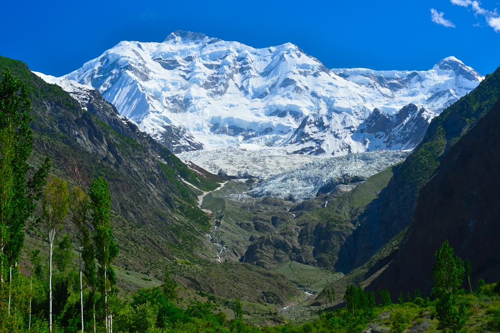
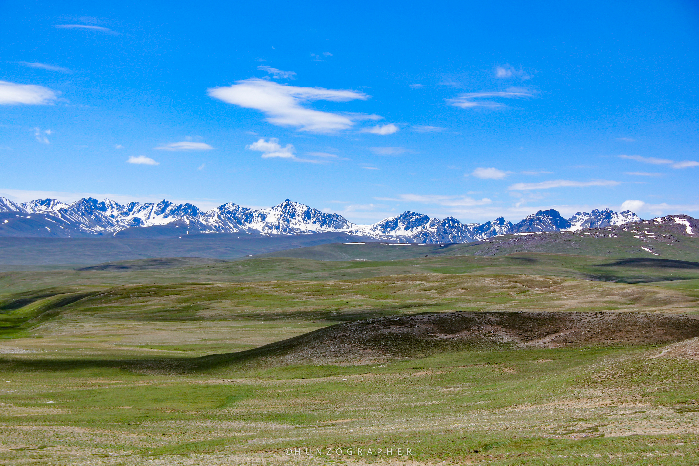

The Call of the Wild
From high-altitude treks beneath 8,000-meter giants to jeep safaris over legendary passes, from white-water rapids to desert camping under endless stars—Pakistan is one of Asia's last great adventure frontiers.
Pakistan offers adventure tourism at every intensity level—gentle valley walks accessible to families, multi-day treks requiring fitness but not technical skills, and serious mountaineering expeditions testing the limits of human endurance. With five of the world's fourteen 8,000-meter peaks, the highest concentration of 7,000-meter summits anywhere, vast deserts, powerful rivers, and dramatic coastlines, Pakistan has terrain to match any adventurer's dream. And because adventure tourism here is relatively young, you'll often have trails and campsites largely to yourself—no crowds, no commercialization, just raw landscapes and warm hospitality.




The legendary KKH from Islamabad to Khunjerab Pass (4,693m, Pakistan-China border) is one of the world's most scenic road journeys. We offer multi-day safaris stopping at key sites—Besham, Chilas rock carvings, Gilgit, Hunza, Passu, Sost, and Khunjerab. Travel in comfortable 4x4 vehicles with experienced mountain drivers.
Cross the Deosai Plains by jeep from Skardu to Astore (or vice versa). Stop for wildlife spotting (brown bears, marmots, ibex), picnic by Sheosar Lake, and experience the vast silence of the plateau. Full-day or multi-day options. Best July-September when the pass is open.
Drive from Chitral to Gilgit via Shandur Pass (3,738m), site of the annual Shandur Polo Festival (July). The pass offers endless high-altitude meadows and is excellent for photography. Combine with exploring Chitral Valley's unique Kalash culture or Gilgit's Silk Road sites.
Explore the vast Thar Desert extension in Punjab. Visit Derawar Fort (massive 40-bastion structure in the desert), sleep in traditional camps, ride camels, and experience desert culture. February sees the Cholistan Jeep Rally—a colorful cultural event. Completely different terrain from the north.
8,000-meter Expeditions: K2 (8,611m), Nanga Parbat (8,126m), Gasherbrum I (8,080m), Broad Peak (8,051m), and Gasherbrum II (8,035m) are serious high-altitude mountaineering objectives requiring extensive experience, permits, and expedition support. We facilitate logistics, permits, porter teams, and base camp management for qualified mountaineers.
6,000-7,000 meter Peaks: Pakistan has dozens of "trekking peaks" and technical mountains in the 6,000-7,000m range offering excellent climbing for experienced mountaineers without the extreme risks of 8,000m giants. Popular objectives include Spantik (7,027m, "Golden Peak"), Diran (7,266m), Miar Peak (6,824m), and Minglik Sar (6,050m).
Alpine-style Peaks: For climbers seeking technical challenge at lower altitude, northern Pakistan offers thousands of unclimbed or rarely-climbed peaks under 6,000m—rock spires, ice faces, and alpine ridges. The Karakoram and Hindu Kush hold limitless potential for exploratory mountaineering.
White Water Rafting: The Indus River and its tributaries offer world-class rafting. The Kunhar River (Kaghan Valley), Swat River, and sections of the Indus provide grade II-IV rapids suitable for beginners to experienced rafters. Multi-day expeditions on the Indus from Skardu down include camping on river beaches beneath towering mountains.
Kayaking: Attabad Lake in Hunza and various alpine lakes offer calm-water kayaking with spectacular scenery. For expert kayakers, Pakistan's rivers present serious white-water challenges—remote, committing, and mostly unexplored.
Fishing: Trout fishing in northern Pakistan's rivers and streams (Swat, Chitral, Gilgit) is excellent. Many areas stock brown and rainbow trout. Fishing permits required but easily arranged.
KKH Bicycle Journey: Cycling the Karakoram Highway is a bucket-list adventure. The 1,300 km from Islamabad to Khunjerab Pass includes serious climbing but rewards with unmatched scenery. We provide vehicle support, accommodation booking, and emergency backup. Best May-June or September-October.
Mountain Bike Trails: Fairy Meadows, Hunza Valley trails, and Margalla Hills offer excellent mountain biking. Local rental bikes are basic, so serious riders should bring their own or arrange quality rentals through us.
Bir Palas in Hunza and certain spots in Swat Valley offer tandem paragliding flights with certified pilots. Soar above valleys with Himalayan peaks as backdrop—unforgettable perspective. Seasonal and weather-dependent; we arrange with reputable operators.
Skiing: Naltar (near Gilgit) and Malam Jabba (Swat) offer Pakistan's main ski resorts. Naltar hosted South Asian Winter Games and has excellent powder. Infrastructure is basic compared to European resorts but improving. Heli-skiing potential remains largely unexplored.
Ice Climbing: Winter brings ice climbing opportunities in northern valleys. The Passu area and Hushe Valley offer frozen waterfalls and ice walls. Specialized activity requiring experienced guides and equipment.
Winter Trekking: For experienced trekkers, winter journeys to Hunza, Shimshal, or even the frozen Zanskar-style routes offer solitude and stark beauty. Very challenging—sub-zero temperatures, limited infrastructure, avalanche risk—but rewards are immense.
Makran Coast: Pakistan's 1,000 km coastline along the Arabian Sea includes dramatic cliffs, hidden coves, and bizarre rock formations (Princess of Hope, Sphinx). Hingol National Park combines coastal desert, mud volcanoes, and the Hinglaj pilgrimage site. This region is remote and requires careful planning but offers completely different Pakistan from the mountains.
Thar Desert: Explore Thar's sand dunes on camel safaris, visit traditional villages, and experience desert festivals. March sees the colorful Tharparkar festival. Combines adventure with cultural immersion.
Adventure tourism requires proper planning, equipment, guides, and emergency protocols. We provide:
Unlike crowded trails in Nepal or commercialized Alps, Pakistan's adventure landscapes remain relatively untouched. Permits for trekking in most areas are simple (some regions require NOCs we arrange). Local communities warmly welcome trekkers—you'll share tea in shepherd huts and hear stories from porters whose fathers climbed with legendary mountaineers. The cost is lower than comparable destinations. And the sheer concentration of high mountains, combined with accessible valleys and diverse terrain, means you can experience everything from gentle cultural walks to extreme mountaineering within a single country. Pakistan is where adventure tourism pioneers go to find frontiers that have largely disappeared elsewhere.